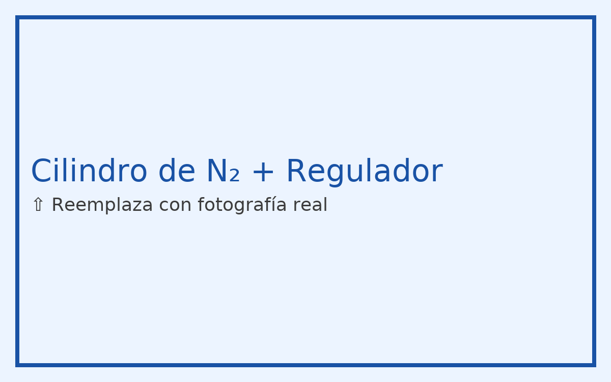
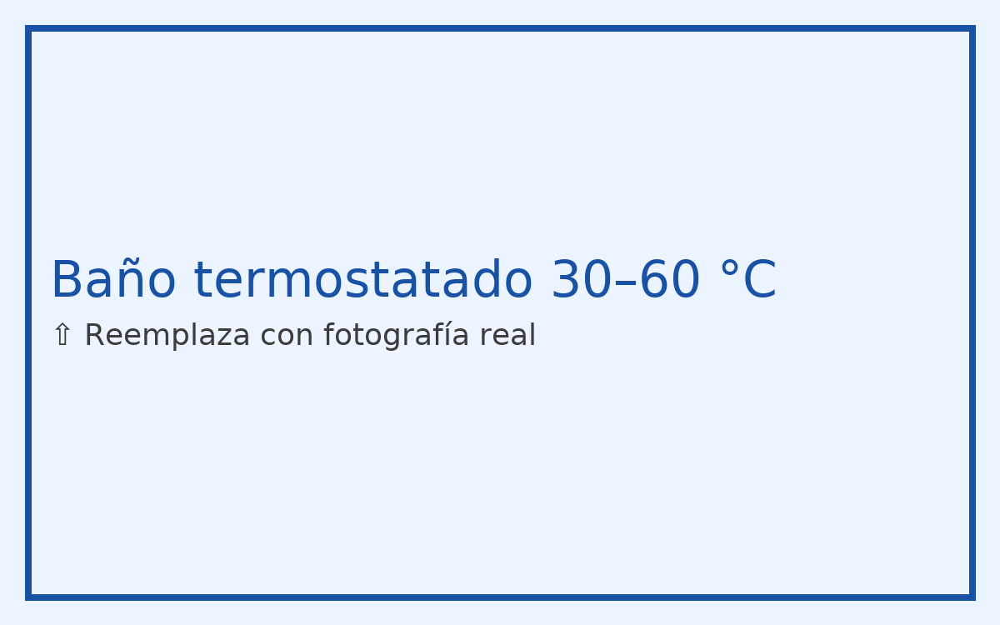
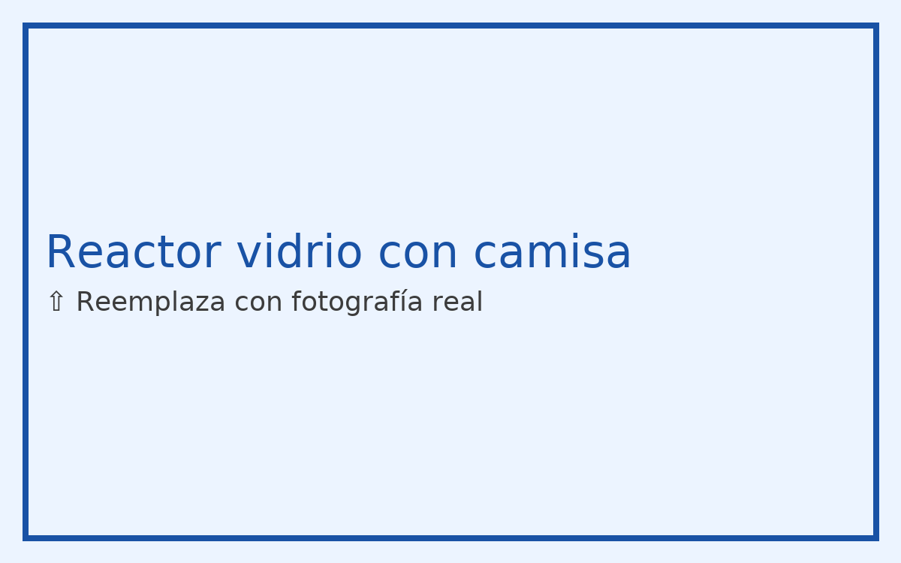
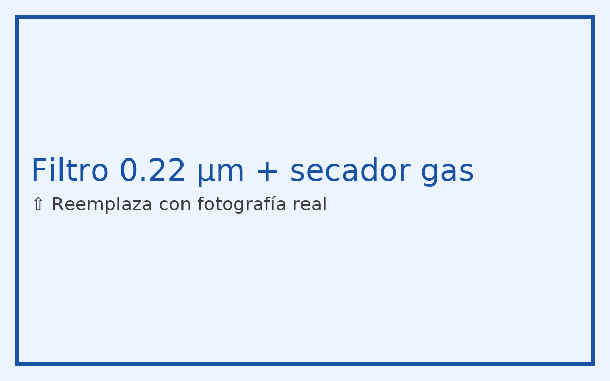

Instrumentación recomendada (con “slots” para fotos reales)




Nota: sustituye las rutas photos/*.jpg por tus fotografías reales del equipo. El layout está listo para imprimir o compartir.
Resumen de métodos
M1 Sparging con N₂ (arrastre de humedad disuelta): burbujeo a través de difusor fino a 35–45 °C.
- Rápido para solventes ya “secos”.
- Reduce ppm de agua hasta ~500–1000 mg/kg.
M2 Recirculación por tamiz 3A (adsorción): pasar solvente por columna 3A activada.
- Secado profundo (<200 ppm agua).
- Ideal previo a mezclar con isocianatos / epóxicos.
Dimensionamiento rápido
| Parámetro | Regla práctica | Ejemplo (10 L de lactato de etilo) |
|---|---|---|
| Caudal N₂ (sparging) | 1–2 volúmenes de gas / volumen de líquido / h | 10–20 L/min |
| Temperatura del líquido | 35–45 °C (no exceder punto de inflamación indirecto) | 40 °C |
| Tamiz 3A necesario | 0.05–0.10 kg por L de solvente | 0.5–1.0 kg |
| Tiempo de contacto en columna | 3–8 min EBCT (Empty Bed Contact Time) | Lecho 30 cm, Ø 4–5 cm, 1–2 L/min |
Procedimiento detallado — M1: Sparging con N₂
1
Preparación del sistema
Monta el cilindro de N₂ con regulador de dos etapas y caudalímetro. Instala un secador en línea (cartucho de sílica gel) a la salida. Coloca el difusor sinterizado en el fondo del reactor/recipiente y conecta con manguera PTFE.
Monta el cilindro de N₂ con regulador de dos etapas y caudalímetro. Instala un secador en línea (cartucho de sílica gel) a la salida. Coloca el difusor sinterizado en el fondo del reactor/recipiente y conecta con manguera PTFE.
2
Carga del solvente
Añade el lactato de etilo al reactor (llenado máximo 70 % del volumen). Inserta termómetro y tapa para minimizar ingreso de aire.
Añade el lactato de etilo al reactor (llenado máximo 70 % del volumen). Inserta termómetro y tapa para minimizar ingreso de aire.
3
Inertización
Realiza una purga de cabeza a 10–15 L/min durante 1–2 min con tapa semiabierta. Cierra tapas y mantén una presión muy ligera (0.05–0.1 bar).
Realiza una purga de cabeza a 10–15 L/min durante 1–2 min con tapa semiabierta. Cierra tapas y mantén una presión muy ligera (0.05–0.1 bar).
4
Elevación de temperatura
Calienta la camisa/baño a 40 °C. Activa agitación suave (100–200 rpm) para homogeneidad.
Calienta la camisa/baño a 40 °C. Activa agitación suave (100–200 rpm) para homogeneidad.
5
Sparging
Abre el N₂ al caudal objetivo (10–20 L/min para 10 L de solvente). Verifica burbujeo fino y uniforme. Mantén 45–90 min según humedad inicial.
Abre el N₂ al caudal objetivo (10–20 L/min para 10 L de solvente). Verifica burbujeo fino y uniforme. Mantén 45–90 min según humedad inicial.
6
Monitoreo
Toma alícuotas cada 30 min y mide humedad por titulación Karl Fischer (o water activity como proxy). Objetivo: <0.2 % (2000 ppm) para epoxi, <0.05 % (500 ppm) para PU.
Toma alícuotas cada 30 min y mide humedad por titulación Karl Fischer (o water activity como proxy). Objetivo: <0.2 % (2000 ppm) para epoxi, <0.05 % (500 ppm) para PU.
7
Blanketing y transferencia
Detén burbujeo; mantén blanket de N₂ (0.05 bar). Transfiere por línea sellada a tambor con liner de aluminio. Purgar el headspace con N₂ 5–10 s y sellar.
Detén burbujeo; mantén blanket de N₂ (0.05 bar). Transfiere por línea sellada a tambor con liner de aluminio. Purgar el headspace con N₂ 5–10 s y sellar.
Consejo: si necesitas bajar por debajo de 500 ppm, continúa con el método M2 (tamiz 3A) tras 30–45 min de sparging. El N₂ reduce rápido el agua “libre”; el 3A remueve la residual.
Procedimiento detallado — M2: Columna de Tamiz 3A
1
Activación del tamiz
Horno a 250–300 °C por 12–16 h en bandeja o columna metálica. Enfriar en desecador y cargar en la columna inmediatamente (evitar exposición al aire).
Horno a 250–300 °C por 12–16 h en bandeja o columna metálica. Enfriar en desecador y cargar en la columna inmediatamente (evitar exposición al aire).
2
Empaque de la columna
Coloca mallas en ambos extremos, llena con 3A (1–2 mm) hasta un lecho de 25–50 cm. Instala válvulas y manómetro. Prueba estanqueidad con N₂.
Coloca mallas en ambos extremos, llena con 3A (1–2 mm) hasta un lecho de 25–50 cm. Instala válvulas y manómetro. Prueba estanqueidad con N₂.
3
Bypass y recirculación
Conecta bomba de diafragma/engranes compatible. Circula solvente en lazo cerrado a 1–2 L/min para 10 L totales, asegurando EBCT 3–8 min. Mantén 30–40 °C para acelerar adsorción.
Conecta bomba de diafragma/engranes compatible. Circula solvente en lazo cerrado a 1–2 L/min para 10 L totales, asegurando EBCT 3–8 min. Mantén 30–40 °C para acelerar adsorción.
4
Monitoreo
Mide humedad en línea (si tienes sensor) o por Karl Fischer cada 15–30 min. Cambia a columna “fresca” cuando el efluente supere 70 % del valor de entrada (punto de ruptura).
Mide humedad en línea (si tienes sensor) o por Karl Fischer cada 15–30 min. Cambia a columna “fresca” cuando el efluente supere 70 % del valor de entrada (punto de ruptura).
5
Finalización y almacenamiento
Una vez alcanzado el objetivo (<200–500 ppm), transfiere a tambor purgado con N₂ y sella. Etiqueta con fecha y humedad final.
Una vez alcanzado el objetivo (<200–500 ppm), transfiere a tambor purgado con N₂ y sella. Etiqueta con fecha y humedad final.
Seguridad: El 3A caliente puede quemar; manipula con guantes y deja enfriar en desecador. No expongas el lecho seco al aire húmedo.
Diagrama de conexiones (texto)
Cilindro N₂ → Regulador (2 etapas) → Válvula aguja → Caudalímetro
↘ Secador en línea (sílica gel) → Válvula → Entrada reactor
→ Difusor sinterizado (fondo)
Salida superior reactor → Trampa de condensados → Filtro 0.22 μm → Tambor final (blanket N₂)
Checklist de operación
- Verificar fugas con agua jabonosa en conexiones de gas.
- Confirmar tierra física del equipo y ventilación correcta.
- Registrar: lote de solvente, temperatura, caudal N₂, tiempos, humedad inicial/final.
- Etiquetar tambor con “Secado con N₂ + 3A”, ppm H₂O, fecha, operario.
Tablas de referencia
| Solvente | ρ (25 °C) | P.eb. (°C) | Objetivo de humedad | Uso típico |
|---|---|---|---|---|
| Lactato de etilo | 1.03 g/mL | 155 | < 500 ppm (PU/epoxi) | Bio-reductor/nivelación |
| Acetato de butilo | 0.88 | 126 | < 1000 ppm | Solvente principal |
| PM Acetate | 0.97 | 145 | < 500 ppm | Control de evaporación |
QA/QC — Métodos de medición de humedad
- Karl Fischer volumétrico: precisión ±10–20 ppm (ideal).
- Pérdida por secado a 105 °C: aproximación; incluye volátiles.
- Sensores capacitivos en línea: útiles para tendencia.
Regeneración del tamiz 3A
- Horno 250–300 °C por 12–16 h; flujo de N₂ o vacío suave.
- Enfriar en desecador hermético; almacenar en frasco ámbar con bolsa desecante.
- Vida útil: 10–20 ciclos según carga de agua.